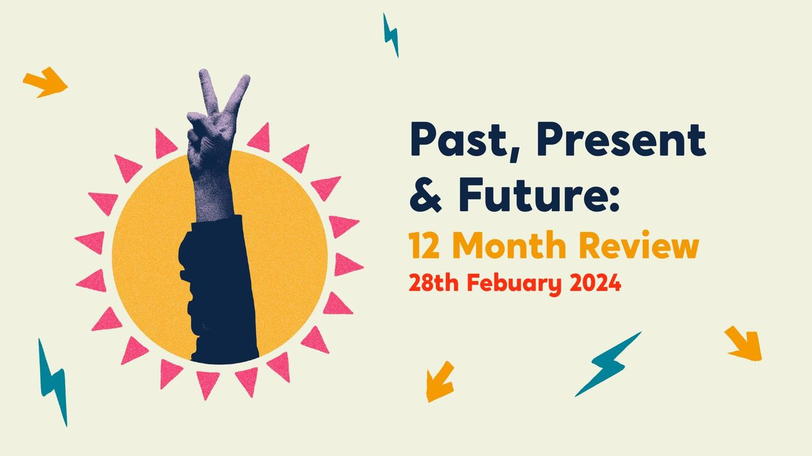
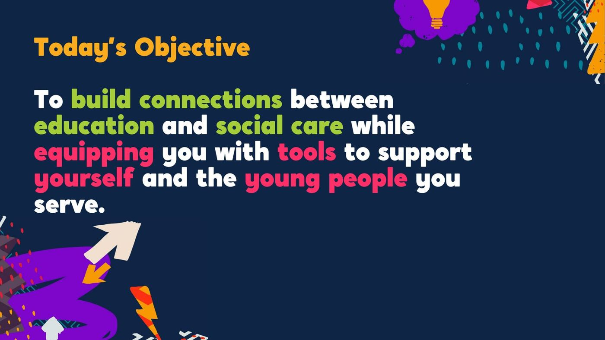
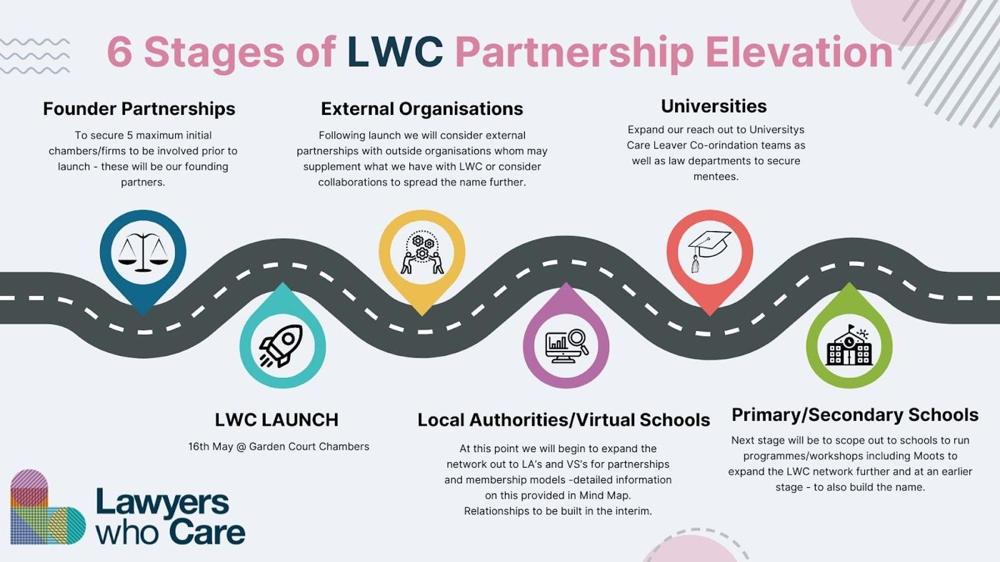

Our work with 36 councils, in every region of England
40 projects since 2017, for 36 local authorities, the NHS and the Department for Education. Every one was co-designed with the children, families and staff who live with the result.


Case studies
Pick a type of work to narrow the list.

NHS Staffordshire and Stoke-on-Trent: Bridge and Beyond
One service for the children who fell between systems. A business case that secured £4 million, and more than 400 staff trained.
Read the case studySuffolk County Council: The Family Business
From corporate parenting to community parenting. Over 60 people at the employer launch, and 40+ young people qualified through the Skills Academy.
Read the case study
Virtual School Kent: A Tool for Change
One child’s story, three cohorts, a county’s schools. Around 490 staff trained, and 124 of 125 said the first session met its objectives.
Read the case study
Durham County Council: Durham Cares
A new vision for children’s services, built from the ground up. 105 residential staff shaped it, and senior leaders agreed 95% of their solutions.
Read the case study
Durham County Council: NVR in residential care
Non-violent resistance in 11 children’s homes. 120 residential staff trained.
Read the case study
Durham County Council: Families First Partnership
Hearing from everyone before changing everything. Over 475 people heard across 50 teams.
Read the case study
Buckinghamshire Council: Youth Voice Bucks
A participation service young people named, branded and shaped. 19 champions from 11 service areas.
Read the case studyRegional Care Cooperative, South East: Youth Participation Collective
A regional network of participation workers, and a Shadow Board of 18 Youth Ambassadors, named and branded by young people themselves.
Read the case study
Middlesbrough Council: PROCLAIM
Making a town-wide trauma-informed schools programme heard. 337 staff signed up to the training platform and 128 CPD certificates were issued.
Read the case study
Middlesbrough Council: Middlesbrough Children Matter
A vision built with young people, after special measures. 300 staff, young people and partners helped shape it.
Read the case study
Darlington Virtual School: Designated Leaders
The training designated teachers designed for themselves. 8 designated teachers co-designed a 10-month programme.
Read the case study
Durham County Council: How Durham Cares
A film about how Durham cares, made with the people who do it. 35+ practitioners and young people interviewed for a documentary and seven short films.
Read the case study
Liverpool Virtual School: Rising Futures
A conference young people helped build. 5 young people designed and ran their own workshop.
Read the case study
NAVSH: Reimagining the Virtual School Head title
Asking Virtual School Heads what their job should be called. 135 responses from a national workshop and survey.
Read the case study
The Care Leaders Summit 2026
A national day with care-experienced leaders at the front. 120 places, and 10 Fellows of The Care Leaders Fellowship on the guest list.
Read the case study
PwC: New World, New Skills
Opening the doors of a global firm to care leavers. 30 care leavers from four councils spent the day at PwC’s London office.
Read the case study
Lawyers Who Care: from idea to CIC
Helping a new legal mentoring organisation get off the ground. Six weeks from first contact to a registered CIC.
Read the case study
Oxfordshire Youth: Young People’s Supported Accommodation
Helping a youth work charity win and set up a county-wide housing service, on a five-year contract.
Read the case studyRotherham MBC: services through young people’s eyes
A scope of children’s services through young people’s eyes. 11 service areas scoped, and a new participation model agreed.
Read the case study
City of York Council: Making York Home
Redesigning support for foster carers, with young people in care in the room. 9 days of youth engagement and co-design.
Read the case study
Stockport Council: Referral and profile training
Training foster carers and social workers to write and read about children differently, mapped to five fostering standards.
Read the case study